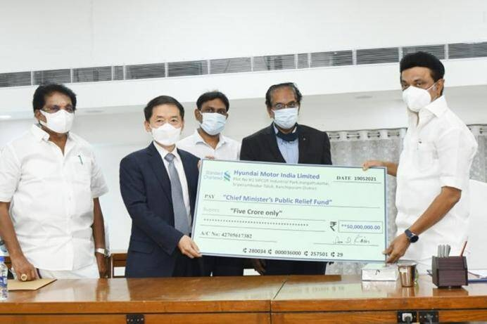
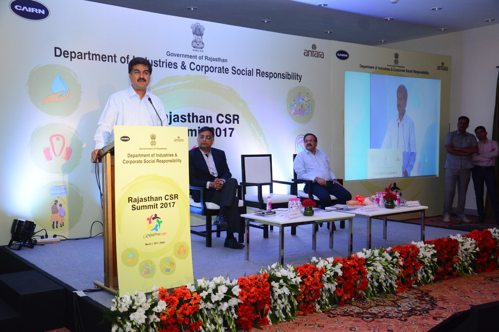
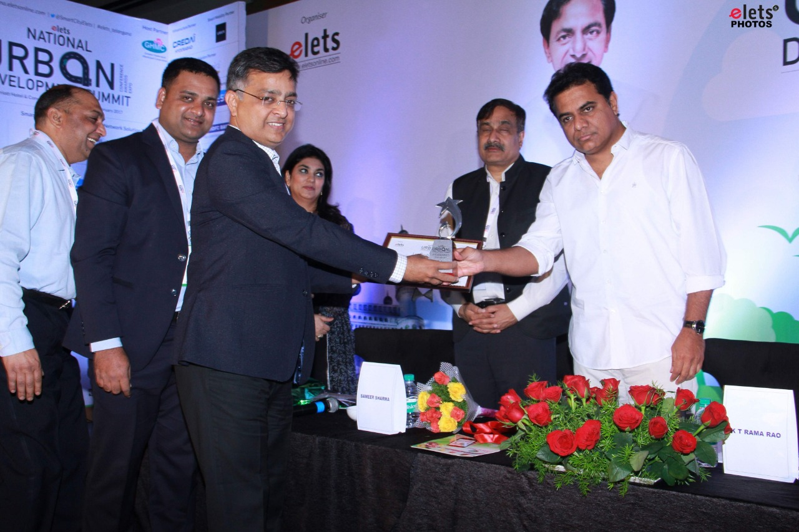
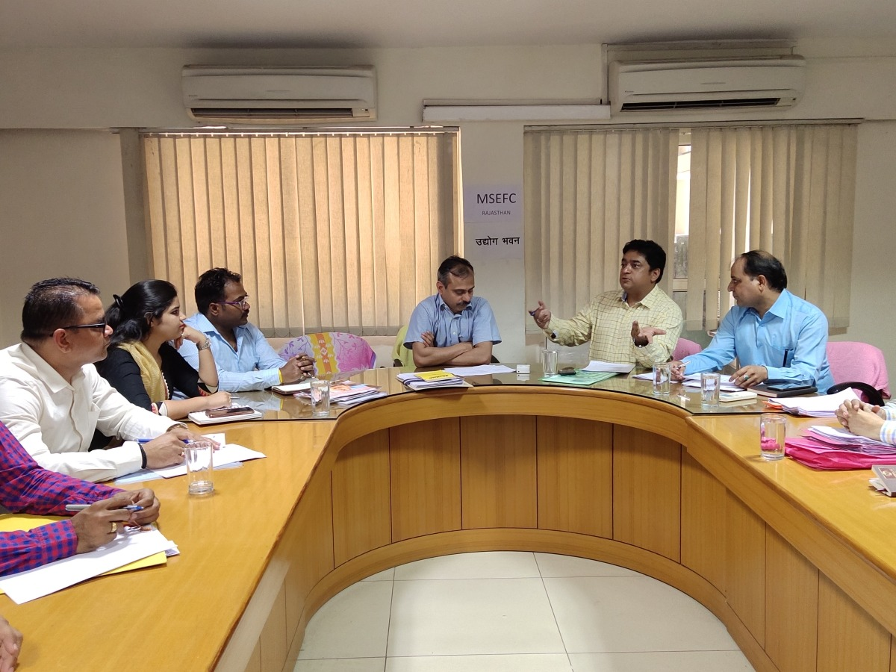
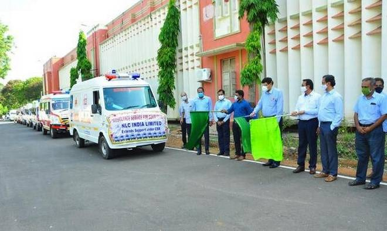
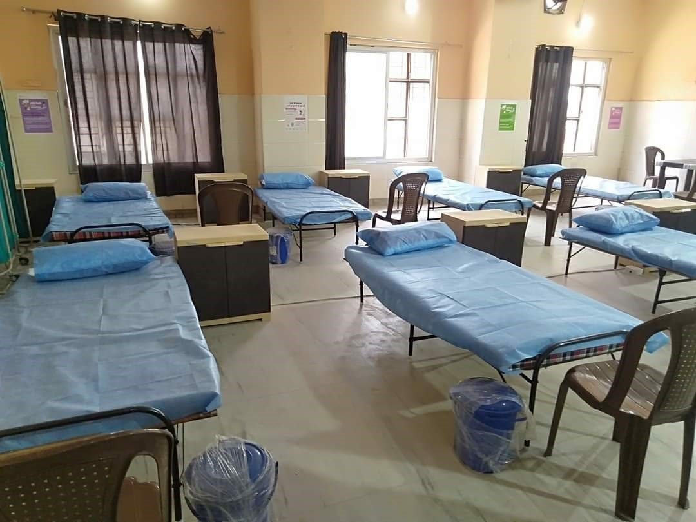
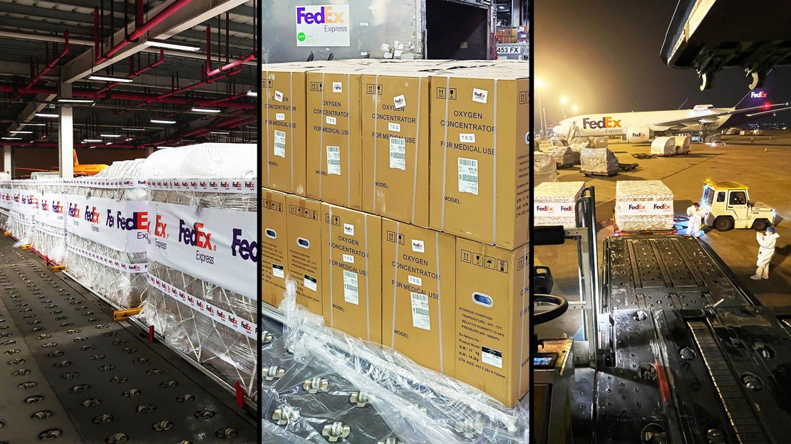
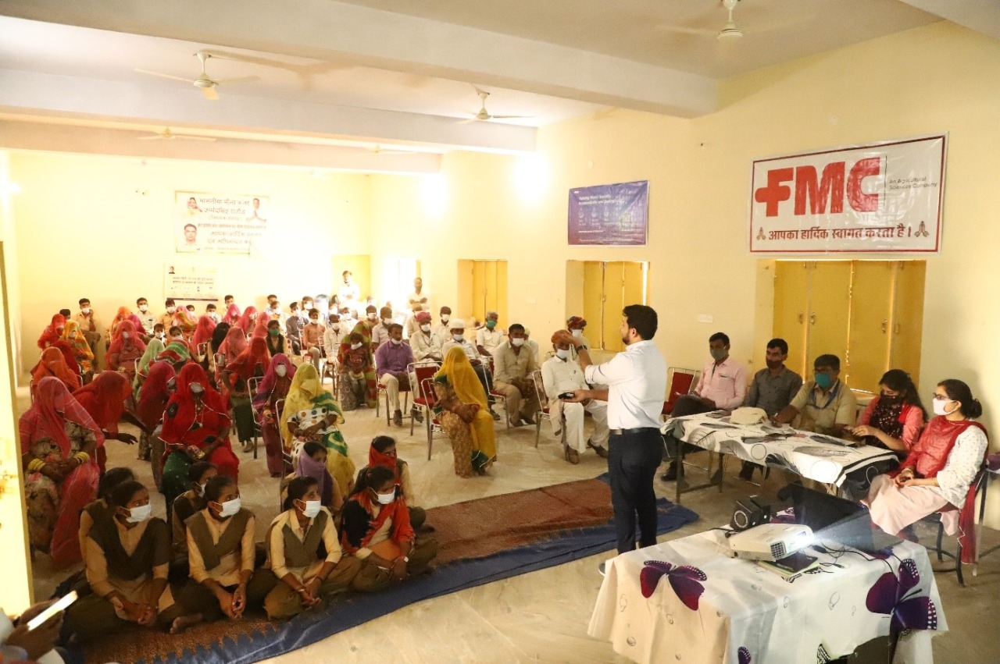
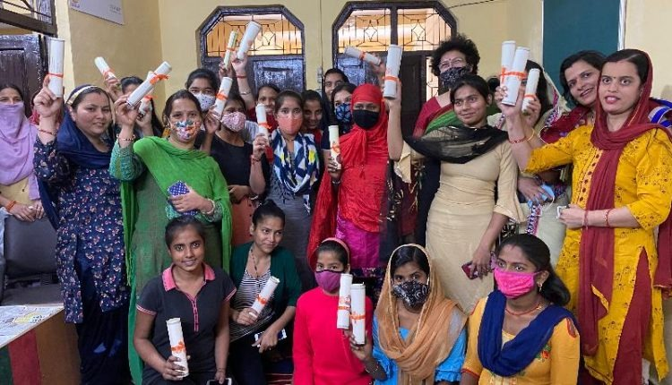

Back to Home
CSR
Portal
News and Events

Corporate Social Responsibility (CSR) Software Market Is Future Development, Vital Challenges and Forecast Analysis By 2028

Promethean Reduces Carbon Footprint and Achieves Carbon Neutrality through Corporate Social Responsibility Program

Top CSR Projects in Darjeeling

Signify Wins Golden Peacock Award For Corporate Social Responsibility 2020

Corporate Social Responsibility (CSR): JSPL dedicates 270 Bedded COVID Care Centre at Angul

NLC India Ltd. donates 10 ambulances to Cuddalore
Recent Post
Piramal Foundation to invest Rs 100 cr towards COVID-19 relief work in aspirational districts

Project SHAKTI by Hindustan Unilever Limited (HUL)
CSR Project By: National Thermal Power Corporation Ltd (NTPC)
Amendments to the CSR regime - corporate social accountability

Book on CSR: Corporate Social Responsibility is Not Public Relations

Corporate Social Responsibility (CSR) funds not used to run government schemes, Union Minister clarified in Loksabha
What room for Politics & Change in Corporate Social Responsibility in India?
Popular events
Corporate Social Responsibility (CSR) Software Market Is Future Development, Vital Challenges and Forecast Analysis By 2028
XAG Corporate Social Responsibility (CSR) Report 2020 Shares Progress in Advancing a Food-Secure Future
Bajaj Auto starts vaccination drive for employees at manufacturing facilities
Industry’s imperatives for sustainability in present times
Popular Post
ACC Trust provided ‘DISHA’ to 14,304 lives in 2020
Xiaomi India donates 1,000 masks and 1,000 sanitisers across Delhi
IBM India’s volunteer teams honored for contributing to sustainable education during Covid-19 crisis
Nissan India contributes over Rs 6.5 crore